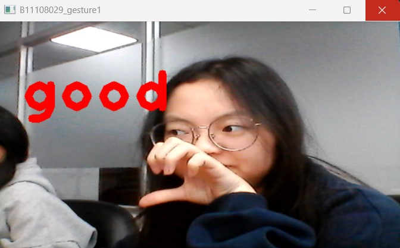
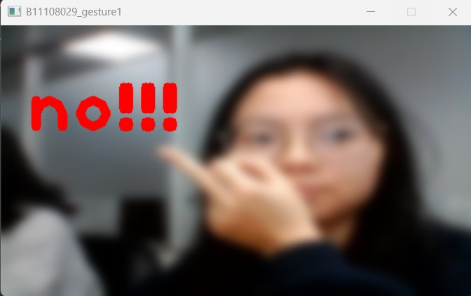
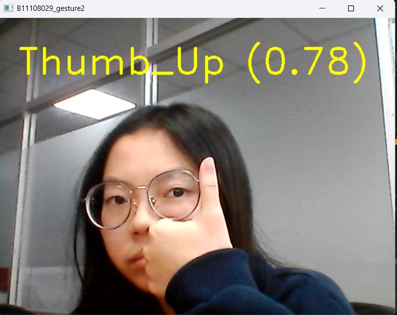
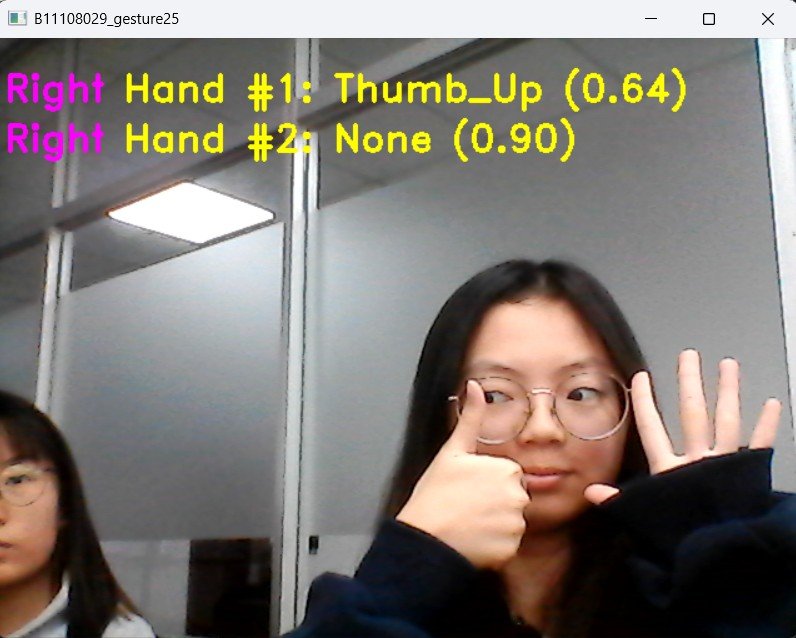
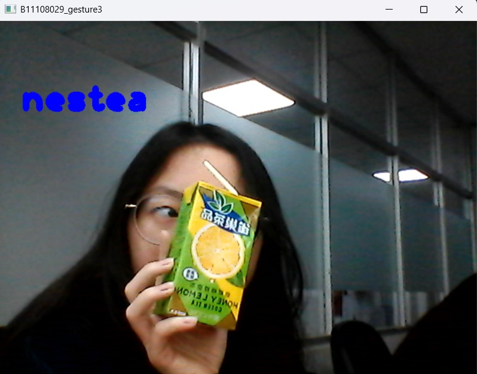
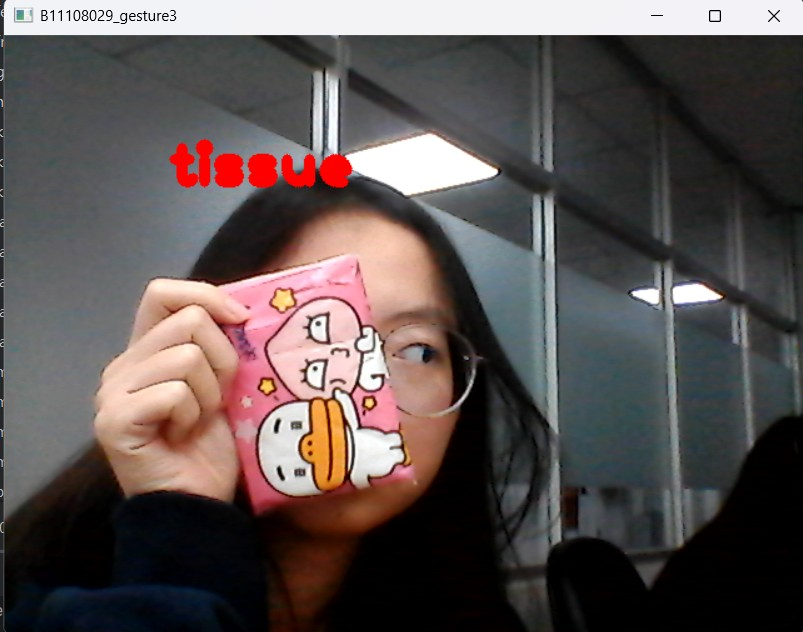
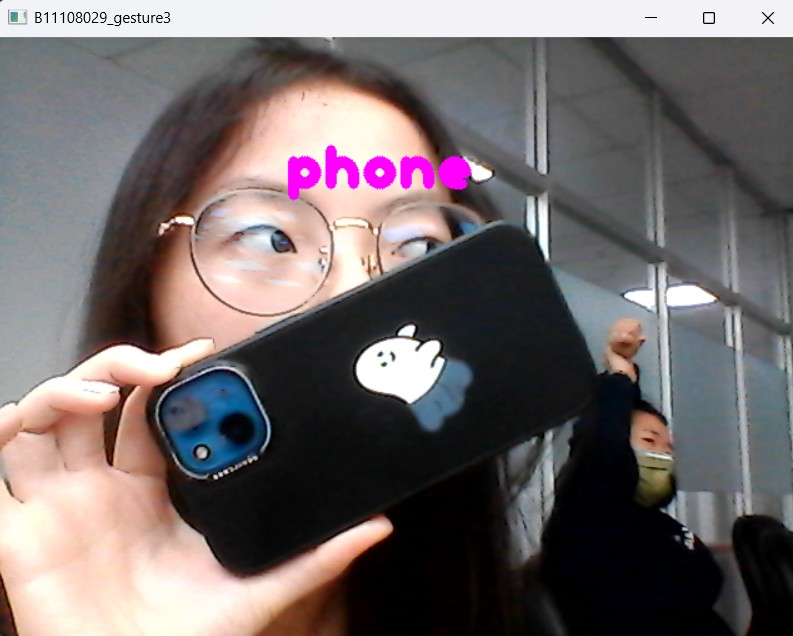

AI09X
Gesture 手勢辨識應用
用三種方式做手勢辨識：角度推論、MediaPipe 內建模型、Teachable Machine。
功能簡介
本專案結合 MediaPipe 與深度學習技術，展示三種手勢辨識方式的實作應用。
AI091｜基於角度的手勢推論：透過手部關鍵點的向量角度計算，定義多組常見手勢並進行推論，為無須訓練模型的邏輯式辨識範例。
AI092｜MediaPipe 內建手勢辨識：使用 MediaPipe 提供的手勢模型，即時辨識如勝利、比讚等手勢並顯示信心值。
AI093｜Teachable Machine 模型辨識：導入 Google Teachable Machine 自行訓練的分類模型，可辨識如「飲料」、「手機」等自定義手勢物件，展現高自由度的辨識應用。
整體功能可應用於人機互動、手勢控制、互動遊戲與視覺辨識介面開發等多元場景。
成果展示







程式碼片段
AI091｜基於角度的手勢推論
import cv2
import mediapipe as mp
import math
mpd = mp.solutions.drawing_utils
mph = mp.solutions.hands
def vector_2d_angle(v1, v2):
try:
angle = math.degrees(math.acos(
(v1[0]*v2[0]+v1[1]*v2[1]) /
(((v1[0]**2+v1[1]**2)**0.5)*((v2[0]**2+v2[1]**2)**0.5))
))
except:
angle = 180
return angle
def hand_angle(hand_):
angles = []
def a(p1, p2, p3, p4): return vector_2d_angle(
(hand_[p1][0] - hand_[p2][0], hand_[p1][1] - hand_[p2][1]),
(hand_[p3][0] - hand_[p4][0], hand_[p3][1] - hand_[p4][1])
)
angles.append(a(0, 2, 3, 4))
angles.append(a(0, 6, 7, 8))
angles.append(a(0, 10, 11, 12))
angles.append(a(0, 14, 15, 16))
angles.append(a(0, 18, 19, 20))
return angles
def hand_pos(angle_list):
f1, f2, f3, f4, f5 = angle_list
if f1<50 and f2>=50 and f3>=50 and f4>=50 and f5>=50: return 'good'
if f1>=50 and f2>=50 and f3<50 and f4>=50 and f5>=50: return 'no!!!'
if f1<50 and f2<50 and f3>=50 and f4>=50 and f5<50: return 'ROCK!'
if f1>=50 and all(f>=50 for f in [f2,f3,f4,f5]): return '0'
if f1>=50 and all(f>=50 for f in [f2,f3,f4]) and f5<50: return 'pinky'
if f1>=50 and f2<50 and all(f>=50 for f in [f3,f4,f5]): return '1'
if f1>=50 and all(f<50 for f in [f2,f3]) and f4>=50 and f5>=50: return '2'
if f1>=50 and f2>=50 and all(f<50 for f in [f3,f4,f5]): return 'ok'
if f1<50 and f2>=50 and all(f<50 for f in [f3,f4,f5]): return 'ok'
if f1>=50 and all(f<50 for f in [f2,f3,f4]) and f5>50: return '3'
if f1>=50 and all(f<50 for f in [f2,f3,f4,f5]): return '4'
if f1<50 and all(f<50 for f in [f2,f3,f4,f5]): return '5'
if f1<50 and all(f>=50 for f in [f2,f3,f4]) and f5<50: return '6'
if f1<50 and f2<50 and f3>=50 and f4>=50 and f5>=50: return '7'
if f1<50 and all(f<50 for f in [f2,f3]) and f4>=50 and f5>=50: return '8'
if f1<50 and all(f<50 for f in [f2,f3,f4]) and f5>=50: return '9'
return ''
cap = cv2.VideoCapture(0)
hands = mph.Hands(model_complexity=0, max_num_hands=1)
w, h = 540, 310
while cap.isOpened():
success, image = cap.read()
if not success:
break
img = cv2.resize(image, (w, h))
results = hands.process(cv2.cvtColor(img, cv2.COLOR_BGR2RGB))
if results.multi_hand_landmarks:
for handLms in results.multi_hand_landmarks:
points = [(lm.x * w, lm.y * h) for lm in handLms.landmark]
if points:
angles = hand_angle(points)
gesture = hand_pos(angles)
if gesture == 'no!!!':
img = cv2.GaussianBlur(img, (35, 35), 0)
cv2.putText(img, gesture, (30, 120), 1, 5, (0, 0, 255), 10)
cv2.imshow('B11108029_gesture1', img)
if cv2.waitKey(5) & 0xFF == 27:
break
cap.release()
cv2.destroyAllWindows()AI092｜MediaPipe 內建手勢辨識
import cv2
import mediapipe as mp
from mediapipe.tasks import python
from mediapipe.tasks.python import vision
base_options = python.BaseOptions(model_asset_path='../models/gesture_recognizer.task')
options = vision.GestureRecognizerOptions(base_options=base_options, num_hands=1)
recognizer = vision.GestureRecognizer.create_from_options(options)
cap = cv2.VideoCapture(0)
while cap.isOpened():
success, image = cap.read()
if not success:
break
imgrgb = cv2.cvtColor(image, cv2.COLOR_BGR2RGB)
image_mp = mp.Image(image_format=mp.ImageFormat.SRGB, data=imgrgb)
result = recognizer.recognize(image_mp)
if result.gestures:
top = result.gestures[0][0]
cv2.putText(image, f'{top.category_name} ({top.score:.2f})', (30, 90),
2, 2, (0, 255, 255), 2)
cv2.imshow('B11108029_gesture2', image)
if cv2.waitKey(5) & 0xFF == 27:
break
cap.release()
cv2.destroyAllWindows()AI093｜Teachable Machine 模型辨識
import tensorflow as tf
import cv2
import numpy as np
model = tf.keras.models.load_model('../models/keras_model.h5', compile=False)
data = np.ndarray(shape=(1, 224, 224, 3), dtype=np.float32)
cap = cv2.VideoCapture(0)
while cap.isOpened():
success, image = cap.read()
if not success:
break
img = cv2.resize(image, (224, 224))
img = cv2.cvtColor(img, cv2.COLOR_BGR2RGB)
image = cv2.flip(image, 1)
normalized = (img.astype(np.float32) / 127.0) - 1
data[0] = normalized
prediction = model.predict(data)[0]
labels = ['phone', 'nestea', 'tissue']
colors = [(255, 0, 255), (255, 0, 0), (0, 0, 255)]
for i, (label, threshold) in enumerate(zip(labels, [0.7, 0.2, 0.4])):
if prediction[i] > threshold:
cv2.putText(image, label, (30 + i*100, 120), 1, 3, colors[i], 8)
cv2.imshow('B11108029_gesture3', image)
if cv2.waitKey(500) & 0xFF == 27:
break
cap.release()
cv2.destroyAllWindows()